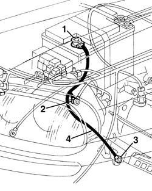

5530B22 battery earth lead - r+r
- Path
- Procedures > 55 ELECTRICAL EQUIPMENT > 5530 CURRENT GENERATOR > 5530B battery and leads > 5530B22 battery earth lead - r+r
- Kind
- repair procedure (removal / refitting; the operation number is the code)
- Applies to
- all engines; all production periods
- Interactive page
- https://sloeber94.github.io/elrnDB-a156/en/#/3238432
Applies to: all engines; all production periods
 Removing
Removing
 Refitting
RefittingPlace the car on the lifting bridge.
1. Open engine compartment cap and disconnect battery negative terminal.
 | Name | Connector |
|---|---|---|
1 | Battery |
2. Disconnect mass terminal on side member.
| Name | Connector |
|---|---|---|
2 | Front left earth |
3. Lift the car and disconnect mass terminal on gearbox.
| Name | Connector |
|---|---|---|
3 | Battery earth |
4. Lower the car again and remove battery earth lead.

Applies to: all engines; all production periods
Refitting
RemovingCheck earth lead is not damaged and, if necessary, carry out suitable continuity tests.
Place battery earth lead again.
Lift the car and connect mass terminal on gearbox.
Lower the car again and connect mass terminal on side member.
Connect battery negative terminal.
Take the car off the lifting bridge.
Topics linked from this page (3)
- A1B Battery ( BATTERY NEGATIVE )
- C1 Battery earth ( BATTERY NEGATIVE )
- C10C Front left earth ( BATTERY NEGATIVE )
Topics that link to this page (9)
- B01 IGNITION SWITCH NOT WORKING
- D01 ENGINE NOT RUNNING SMOOTHLY / (HESISTANT)
- D03 ENGINE NOT RUNNING SMOOTHLY / (IRREGULAR OPERATION)
- D21 ENGINE CUTS OUT WHILST DRIVING
- 1072B50 sleeves connecting air capacity box to inlet manifold is - r+r
- 5505A38 power unit/body earth wire - r+r
- 5510C14 ignition coil/s - r+r
- 5510D10 spark plugs - r+r
- 5510D14 spark plug cable lead bundle - r+r